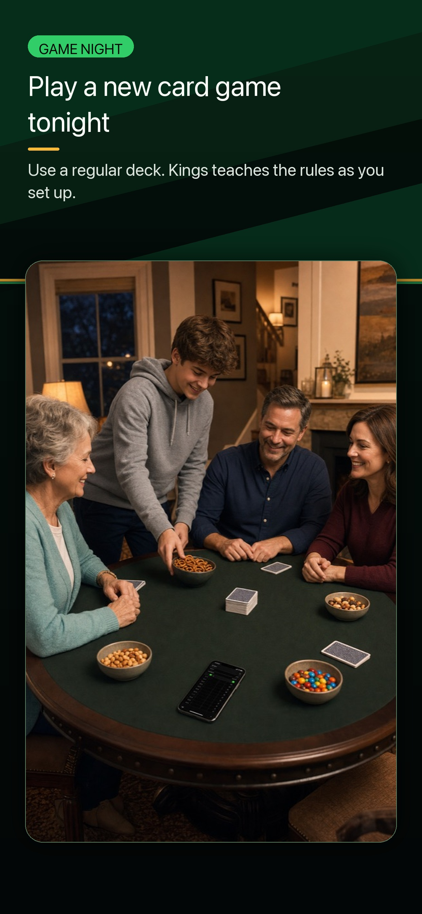
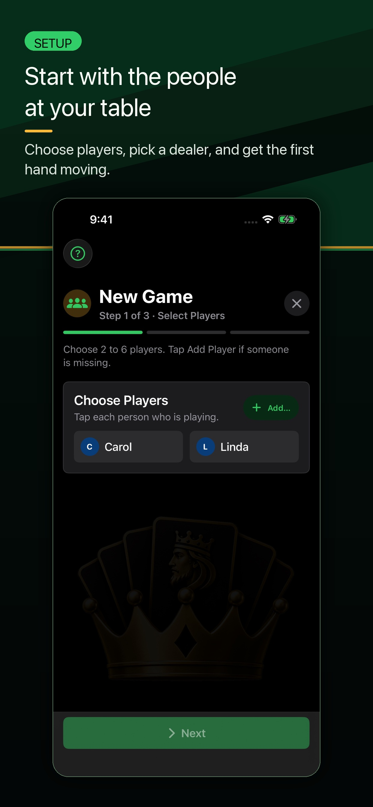
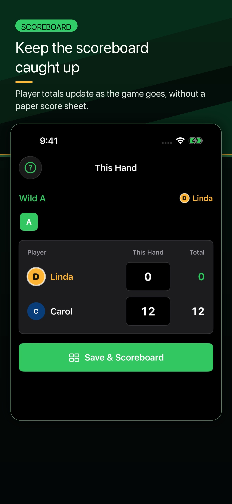

Support
Help for keeping a real Kings game moving: setting up players, seeing what is wild, checking scores, reviewing history, sharing results, and using optional iCloud scorebook sharing.
What Kings Helps With
- Learn Kings with the native Learn To Play guide during setup or anytime from Settings.
- Score real card games for 2 to 6 players.
- See the current wild card and keep every hand total clear.
- Review History, player stats, Records, and saved game summaries after game night.
- Share a visual game summary when the table wants bragging rights.
- Use optional iCloud Family Scorebook sharing when your family wants connected completed-game history.
Quick Answers at the Table
| What is wild? | Check the current hand in the scoring flow or scoreboard before players count their remaining cards. |
|---|---|
| What is my score? | Use the scoreboard to review each player's running total after a hand is saved. |
| Who is winning? | The lowest total is winning. Review the scoreboard during the game or the summary after the game ends. |
Quick Start



- Open Kings and start a new game.
- Select 2 to 6 players from your roster or add new players.
- Score each hand when it ends.
- Use the scoreboard to review totals and tap Score Hand when the next hand is ready.
- When the game ends, review the final summary and saved history.
If you have never played Kings before, read the How to Play Kings guide first. You can also download the one-page rules sheet to keep beside the cards.
Common Questions
Can I use Kings without an account?
Yes. You can keep score on one device without creating a separate Kings account. Optional Family Scorebook sharing uses Apple's iCloud and CloudKit systems.
How many players are supported?
Kings supports games with 2 to 6 players.
Does Kings support iPad?
Yes. Kings supports iPhone and iPad, including portrait and landscape layouts.
Can I share a game summary?
Yes. After a game, use the share action on the summary screen to share a visual game card with another app or person.
What should I include in a support request?
Open Kings and go to Settings > About Kings > Copy Support Details, then paste those details into the GitHub support request. Also include the steps that led to the issue. For scoring questions, include the hand number, wild rank, player count, and what looked wrong.
iCloud Scorebook Sharing
Kings can use Apple's iCloud and CloudKit systems for optional Family Scorebook sharing. If sharing is enabled, finalized game history can sync through Apple's iCloud sharing flow after games are saved.
In-progress games stay on the device while you are playing. Player profiles use names, colors, initials, and optional built-in icons.
The scorebook owner manages sharing. Invited players can claim the player profile that represents them on their own device.
App Details
Current App Store Release Notes
This update adds Learn To Play, a native in-app guide for learning Kings during setup or anytime from Settings. It also improves History and Records, refreshes Settings with clearer scorebook, sharing, help, display, and launch controls, improves iPad layouts across onboarding, scoring, History, and Settings, and keeps iPhone gameplay in portrait with tighter hand-entry polish.
Troubleshooting
A score looks wrong
Review the hand history and player totals on the scoreboard or game summary. If you find a repeatable scoring issue, please include the hand number, wild rank, player count, and what you expected.
The share sheet does not look right
Try closing and reopening Kings, then share the summary again. If the issue continues, include your device model, iOS version, and whether the app was in light or dark mode.
iCloud sharing is not updating
Confirm iCloud is enabled on the device and that the invited person accepted the Apple iCloud sharing invitation. Apple account and iCloud availability can affect sharing.
I do not see Family Scorebook options
Check that your device is signed in to iCloud and that iCloud is available. Kings keeps working locally if iCloud is unavailable.
An invite is already pending
Use Manage Family Sharing in Kings settings to review Apple invitations. The scorebook owner controls invitations.
Support and Contact
Support requests opened through GitHub are public. Do not include phone numbers, home addresses, private family details, or other sensitive personal information.
Use the public support form if you need help. GitHub may ask you to sign in before you can send the request.
The GitHub support form is optional. It is not part of the Kings app, and it is not used for app data collection.
Before opening the request, open Kings and go to Settings > About Kings > Copy Support Details. Paste those copied details into the GitHub issue, then add a short note about what happened.
The copied support details are designed to be privacy-safe. They include app, device, system, display, scorebook, iCloud, sync, and last-message status. They do not include player names, scores, game history, Apple IDs, iCloud record IDs, or scorebook names.
If you attach screenshots, crop or cover player names, scores, or anything else you do not want public.